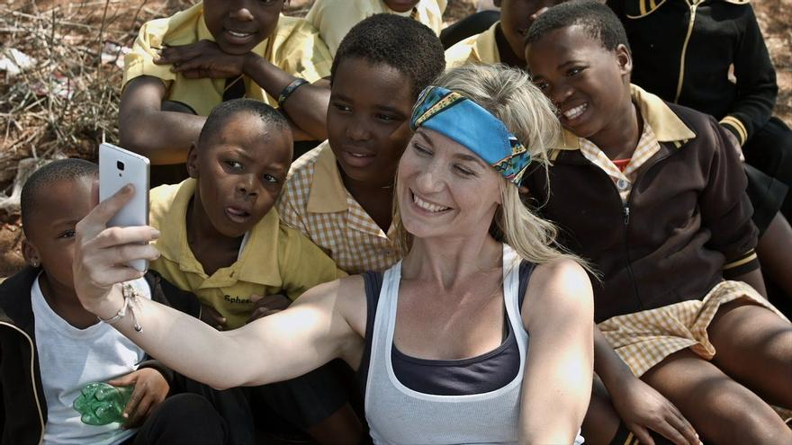
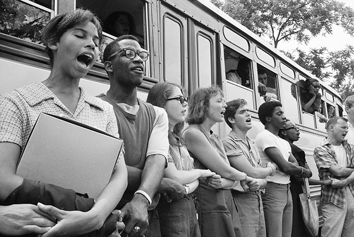

Nabarmenak dira zuritasuna boterearekin eta prestigioarekin lotzen den gizarteetan, askotan oharkabean pribilegio positiboak izaten baitituzte. Pribilegio horiek ez dira soilik diskriminaziorik ezari buruzkoak, baita talde nagusian egotetik sortzen diren abantaila inplizituei buruzkoak ere.

Adibidez, pertsona zuriak "arautzat" hartzen dira komunikabideetan, politikan eta negozioetan, eta horrek erraztu egiten du haien ordezkaritza eta kide soziala izatea. Onura horietako batzuk dira modu negatiboan estereotipatua ez izatea, espazio publikoak susmagarria izan gabe nabigatu ahal izatea, edo lanbide- eta hezkuntza-sareetarako sarbide errazagoa izatea. Gainera, azal zuriaren koloreak lana, etxebizitza edo justizia lortzeko oztopoak murriztu ditzake, joera inkontzienteen edo arraza-egitura historikoen ondorioz.
Pribilegio horiei buruz hausnartzea funtsezkoa da gizarte-egiturek talde jakin batzuei mesede egiten dietela eta desberdintasunak betikotzen dituztela aitortzeko. Kontzientzia hartze horrek arraza-ekitatearekiko enpatia eta konpromiso handiagoa lortzeko bidea ireki dezake, sistema bidegabeak zalantzan jartzen eta eraldatzen lagunduz.
Bideo honek pribilegioei buruzko hausnarketa egiten du, ikuspegi kritiko batetik, eta azpimarratzen du pertsona askok ez dituztela ezagutzen dituzten pribilegioak; izan ere, abantaila estruktural horiek heredatu egiten dira, eta ez dira indibidualak soilik.
hauskortasun zuriaz hitz egiten du, eta azaltzen du pertsona zuriak deseroso edo defentsibo sentitzeko joera dutela arraza-pribilegioa aipatzen denean, ez baitaude ohituta beren arraza interpelatzera. Azken hausnarketak bere burua egunero zalantzan jartzera gonbidatzen du, arraza, genero edo gizarte-egoeraren araberako oztoporik gabe munduan zehar mugitzea errazten duten abantaila ikusezinei buruz.

Zuria izatea abantaila esanguratsua izan daiteke hezkuntzan, batez ere herrialdeetan non arraza sistematikoki eragiten duen aukera-berdintasunean. Pertsona zuriak, askotan, eskola-sistemetako estandarretara hobeto egokitzen dira, hezkuntza-materialetan eta curriculumetan nagusi den ikuspegi eurozentrista eta zuria dela medio. Horrek eredu eta erreferente positiboak eskaintzen dizkie, autoestimua eta ikaskuntza esperientzia hobetzera lagunduz.
Gainera, zuriak izanik, haurrek aukera gehiago izan dezakete eskoletan tratamendu justuagoa jasotzeko, zigorretan edo ebaluazioetan diskriminazio-arrisku txikiagoarekin. Hezkuntza-erakundeak, zuzendariak eta irakasleak inkontzienteki jo dezakete haiei alde egiteko, aurreiritzi kulturalek eta arrazialek eraginda. Bestalde, ikasle ez-zuriek, batzuetan, aurre egin behar izaten diete arrazakeriari edo estereotipoei, horrek euren ikasketan zailtasunak sortu ditzakeelarik.
Azken batean, zuria izatea hezkuntza-sisteman ikusgarritasun eta tratu pribilegiatuak ekar ditzake, eta horrek sakondu egiten du beste arrazako ikasleen aukera-berdintasunerako arrakala.